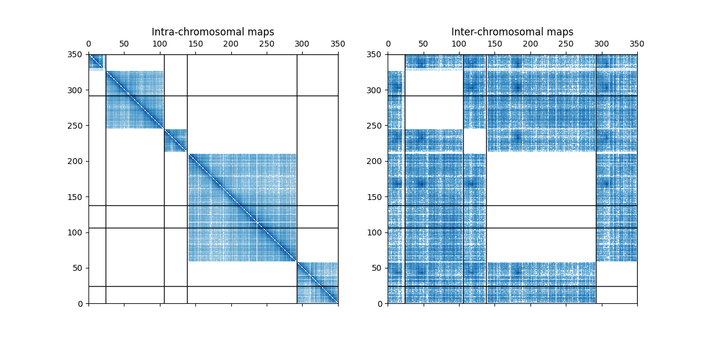

Note
Click here to download the full example code
This examples shows how to use a mask to plot only the inter or the intra contact map.
Out:
/home/travis/build/hiclib/iced/iced/io/_io_pandas.py:56: UserWarning: Attempting to guess whether counts are 0 or 1 based
warnings.warn(
[<matplotlib.lines.Line2D object at 0x7f2291098790>, <matplotlib.lines.Line2D object at 0x7f22912419d0>, <matplotlib.lines.Line2D object at 0x7f22912418b0>, <matplotlib.lines.Line2D object at 0x7f2291241790>, <matplotlib.lines.Line2D object at 0x7f22912a7d90>]
import numpy as np
import matplotlib.pyplot as plt
from matplotlib import colors
from iced import datasets
from iced.utils import get_intra_mask
from iced.utils import get_inter_mask
# Loading a sample dataset
counts, lengths = datasets.load_sample_yeast()
intra_mask = get_intra_mask(lengths)
inter_mask = get_inter_mask(lengths)
fig, axes = plt.subplots(ncols=2, figsize=(12, 6))
inter_counts = counts.copy()
inter_counts[intra_mask] = np.nan
intra_counts = counts.copy()
intra_counts[inter_mask] = np.nan
m = axes[0].matshow(intra_counts, cmap="Blues", norm=colors.SymLogNorm(1),
extent=(0, len(counts), 0, len(counts)))
m = axes[1].matshow(inter_counts, cmap="Blues", norm=colors.SymLogNorm(1),
extent=(0, len(counts), 0, len(counts)))
axes[0].set_title("Intra-chromosomal maps")
axes[1].set_title("Inter-chromosomal maps")
[axes[0].axhline(i, linewidth=1, color="#000000") for i in lengths.cumsum()]
[axes[0].axvline(i, linewidth=1, color="#000000") for i in lengths.cumsum()]
[axes[1].axhline(i, linewidth=1, color="#000000") for i in lengths.cumsum()]
[axes[1].axvline(i, linewidth=1, color="#000000") for i in lengths.cumsum()]
Total running time of the script: ( 0 minutes 0.396 seconds)